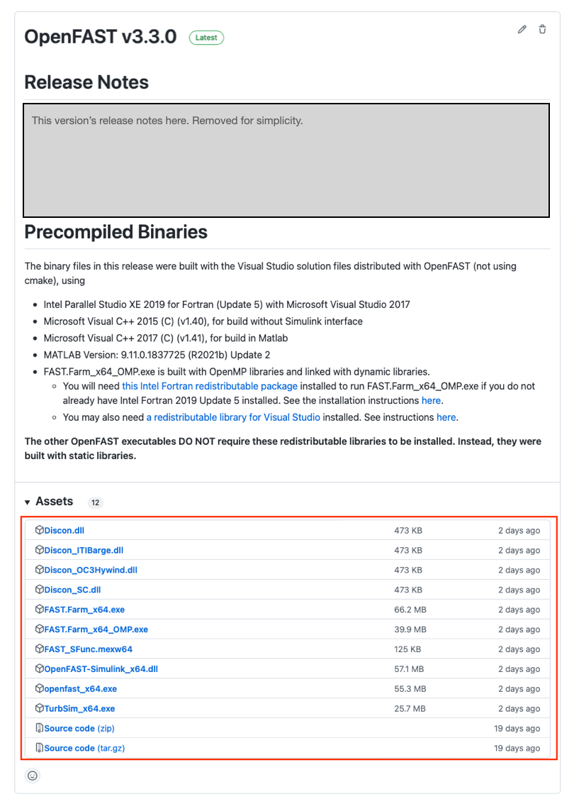

2. OpenFAST 설치
사전 컴파일된 바이너리를 얻거나 소스 코드에서 OpenFAST를 컴파일하기 위한 지침 및 절차는 여기에 설명되어 있습니다. 동일한 결과를 달성하는 방법은 여러 가지가 있지만 OpenFAST 팀은 포괄적이고 세심하게 고안된 설치 시스템을 개발했습니다. 따라서 여기에 설명된 방법은 OpenFAST 실행 파일을 얻기 위해 공식적으로 지원되고 유지되는 유일한 경로입니다.
대부분의 OpenFAST 사용자는 소스 코드를 수정하거나 컴파일할 필요가 없습니다. 소스 코드를 변경하지 않고 OpenFAST를 가장 간단하게 설치하려면, 는 다음의 표를 참조하십시오. 바이너리 다운로드 또는 도커로 OpenFAST 실행 섹션을 참조하고 특정 지침에 대해서는 해당 문서를 읽어보세요. 컴파일에 대한 지침은 다음을 참조하세요. 소스에서 컴파일.
Python을 사용하여 OpenFAST 파일을 조작하려면 다음을 참조하세요. openfast_io Python 래퍼 설치.
2.1. 바이너리 다운로드
소스 코드를 변경하지 않고 OpenFAST 시뮬레이션을 실행하려는 사용자의 경우 사전 컴파일된 바이너리를 사용한 설치를 권장합니다. 설치 절차는 지원되는 각 운영 체제마다 다르며, 아래 표에서는 바이너리를 얻는 방법에 운영 체제를 매핑합니다. "릴리스" 버전은 OpenFAST의 잘 테스트되고 안정적인 버전입니다. 새 릴리스는 다음의 병합에 해당합니다.
저장소의 dev
분기를
버전 태그와 함께 main 분기. "시험판" 버전에는 최신 커밋이 포함되어 있습니다. dev 분기에는 불안정한 코드가 포함될 수 있지만 항상 최신 기능을 갖습니다.
운영 체제 |
방법 |
OpenFAST 버전 |
문서 섹션 |
|---|---|---|---|
리눅스 |
콘다 |
출시, 시험판 |
|
macOS |
콘다 |
출시, 시험판 |
|
macOS |
홈브루 |
출시 |
|
윈도우 |
GitHub 릴리스 |
출시 |
2.1.1. 콘다 설치
OpenFAST 릴리스는 다음을 통해 배포됩니다. 아나콘다 패키지 관리자를 통해 OpenFAST 콘다 포지 macOS 및 Linux용 채널. 설치에는 다음이 포함됩니다.
OpenFAST 글루 코드 실행 가능
사용 가능한 모듈 드라이버
C++ 헤더 파일
다음 명령은 새 환경을 생성하고, OpenFAST를 설치하고, 설치를 테스트하는 방법을 설명합니다.
# Create a new conda environment
conda create -n openfast_env
# Install OpenFAST through the Conda Forge channel
conda install -c conda-forge openfast
# Test OpenFAST
which openfast
openfast -v
# Test the HydroDyn driver
which hydrodyn_driver
hydrodyn_driver -v
시험판은 다음을 지정하여 conda를 통해 설치할 수 있습니다.
아래와 같이 dev 라벨.
conda install -c conda-forge/label/dev openfast
이는 항상 최신 커밋입니다.
저장소의 dev 분기에는 OpenFAST에 대한 최신 변경 사항이 포함되어 있지만 이러한 빌드는 전체 릴리스 버전만큼 테스트되지 않았습니다.
2.1.2. 홈브루 설치
macOS 시스템의 경우 OpenFAST 릴리스는 다음을 통해 배포됩니다. 홈브루 패키지 관리자. 설치에는 OpenFAST 글루 코드 실행 파일만 포함됩니다.
Homebrew를 설치하고 설치를 테스트하려면 다음 명령을 사용하십시오.
# Update Homebrew
brew update
# Install OpenFAST
brew search openfast
brew install openfast
# Test OpenFAST
which openfast
openfast -v
2.1.3. GitHub 릴리스
Windows 시스템의 경우에만 사전 컴파일된 바이너리가 OpenFAST GitHub의 각 릴리스에 제공됩니다. 출시 페이지. 바이너리는 Intel Fortran 컴파일러 버전 2020으로 컴파일됩니다.
중요
사전 컴파일된 바이너리에는 기본적으로 바이너리에 포함되어 있지 않은 인텔 포트란 컴파일러 또는 인텔 MKL 재배포 가능 라이브러리가 필요합니다. 라이브러리를 구성하려면 하단에서 설치 프로그램을 다운로드하세요. 이 페이지. 명령 프롬프트가 열려 있는 경우 변경 사항을 적용하려면 라이브러리를 설치한 후 명령 프롬프트를 닫아야 합니다. Intel 라이브러리를 설치하려면 관리자 권한이 필요합니다.
OpenFAST 실행 파일은 각 릴리스의 "자산" 드롭다운에서 다운로드할 수 있습니다. "소스 코드"라는 두 자산은 필요하지 않습니다.

압축된 파일에는 다음 항목이 포함되어 있습니다:
파일 이름 |
설명 |
|---|---|
openfast_Win32.exe |
32비트 단정밀도 |
openfast_x64.exe |
64비트 단정밀도 |
openfast_x64_double.exe |
64비트 배정밀도 |
Map_Win32.dll |
32비트 MAP++ 라이브러리 |
Map_x64.dll |
64비트 MAP++ 라이브러리 |
DISCON_DLLS/<64비트 또는 Win32>/DISCON.dll Jonkman 5-MW용 |
컨트롤러 라이브러리(이전에는 NREL 5-MW라고 함) |
DISCON_DLLS/<64비트 또는 Win32>/DISCON_ITIBarge.dll Jonkman 5-MW(이전의 NREL 5-MW)용 |
컨트롤러 라이브러리 - ITI Barge |
DISCON_DLLS/<64비트 또는 Win32>/DISCON_OC3Hywind.dll Jonkman 5-MW(이전의 NREL 5-MW)용 |
컨트롤러 라이브러리 - OC3 Hywind |
콘텐츠를 추출한 후 명령 프롬프트를 열고 실행 파일이 포함된 디렉터리로 이동한 후 간단한 테스트 명령을 실행하여 OpenFAST 실행 파일을 테스트할 수 있습니다.
cd C:\your\path\Desktop\openfast_binaries\
openfast_x64.exe /h
2.2. 도커로 OpenFAST 실행
OpenFAST는 버전 3.5.3부터 docker에서 실행할 수 있습니다. 세 가지 접근 방식이 아래에 공유되어 있습니다.
2.2.1. Docker 허브에서 Docker 이미지 사용
OpenFAST의 여러 버전은 당사의 도커 이미지로도 제공됩니다. 도커 레지스트리. 사용 가능한 로컬 컴퓨터의 파일을 가져와서 실행하려면 다음을 실행하세요.
docker run --rm -it --volume=/path/to/files:/files nrel/openfast:latest openfast /files/main.fst
이 명령은 분석이 완료되면 컨테이너(이미지 제외)를 삭제하고 출력을 입력 파일과 동일한 로컬 디렉터리에 남겨둡니다.
다음을 사용하여 컨테이너 내에서 대화형으로 명령을 실행할 수도 있습니다.
docker run --rm -it --volume=/path/to/files:/files nrel/openfast:latest /bin/bash
특정 릴리스를 가져오려면 다음 대신 버전 번호를 사용하십시오. 최신 위 명령의 (예: nrel/openfast:3.5.3).
2.2.2. GitHub 컨테이너 레지스트리의 Docker 이미지 사용
Docker 허브에서 호스팅되는 이미지 외에도 당사에서는 Docker 이미지도 호스팅합니다. GitHub 컨테이너 레지스트리. GitHub 컨테이너 리포지토리에서 이미지를 가져오는 명령은 Docker 허브에서 이미지를 가져오고 실행하는 명령과 유사합니다.
로컬 파일을 가져와서 실행하려면:
docker run --rm -it --volume=/path/to/files:/files ghcr.io/openfast/openfast:latest openfast /files/main.fst
컨테이너를 대화형으로 실행하는 경우:
docker run --rm -it --volume=/path/to/files:/files ghcr.io/openfast/openfast:latest /bin/bash
특정 릴리스를 가져오려면 다음 대신 버전 번호를 사용하십시오. 최신 위 명령의 (예: ghcr.io/openfast/openfast:3.5.3).
2.2.3. 나만의 이미지 구축
다음을 사용하여 사용자 정의 이미지를 구축할 수도 있습니다. 도커파일 또는 당사의 이미지를 기반으로 하세요. 참조 도커 읽어보기 이에 대한 자세한 내용은 를 참조하세요.
2.3. 설치 openfast_io 파이썬 래퍼
해당 openfast_io Python 패키지는 OpenFAST 파일을 Python 개체로/에서 변환하기 위한 판독기와 기록기로 구성된 래퍼입니다.
사용하려면 openfast_io 는 다음을 통해 사용할 수 있습니다(이미 Python 환경을 설정했다고 가정).
pip install openfast_io
이 지침은 제품과 직접 상호 작용하기 위한 것입니다. openfast_io 소스 코드.
OpenFAST 저장소를 복제하지 않은 경우에만 이 단계를 따르십시오.
git clone https://github.com/OpenFAST/OpenFAST.git
cd OpenFAST
OpenFAST 디렉토리 내에 있다고 가정합니다.
cd openfast_io
pip install -e .
자세한 내용 및 설치 옵션은 다음을 참조하세요. OpenFAST Python 읽어보기.
2.4. 소스에서 컴파일
소스 코드에서 컴파일하기 위해 NLR OpenFAST 팀은 CMake를 사용하여 모든 플랫폼에 대한 빌드 파일을 생성하는 접근 방식을 개발했습니다. 현재 활성 개발을 수행하는 동안 Visual Studio에 대한 CMake 지원은 잘 지원되지 않으므로 OpenFAST는 Windows 개발자에게 효율적인 방식으로 코드 작성, 컴파일 및 디버깅을 위한 또 다른 옵션을 제공하는 Visual Studio 솔루션을 유지 관리합니다. 참조 Windows용 Visual Studio 솔루션 자세한 내용은 를 참조하세요. Visual Studio가 Windows 개발의 요구 사항이 아닌 경우 CMake가 적합합니다. CMake의 배경은 다음과 같습니다. CMake 이해및 구성 및 컴파일 절차는 다음과 같습니다. Linux/macOS용 Make가 포함된 CMake Windows용 Visual Studio를 사용하는 및 CMake.
Linux 하위 시스템, cmake 및 VS 코드를 사용하여 Windows에서 컴파일하는 방법에 대한 지침은 다음을 참조하세요. Linux 하위 시스템 및 VS 코드가 포함된 Windows.
일반적으로 컴파일하는 데 필요한 단계는 다음과 같습니다.
2.4.1. 종속성
소스에서 OpenFAST를 컴파일하려면 OpenFAST 리포지토리와 함께 배포되지 않는 추가 라이브러리와 도구가 필요합니다. 최소 OpenFAST 컴파일에는 다음 각 구성 요소가 필요합니다.
C++, C 및 Fortran 컴파일러
BLAS 및 LAPACK 수학 라이브러리
빌드 시스템
대부분의 경우 이러한 도구는 시스템의 패키지 관리자(예:
macOS용 homebrew ,
CentOS/Red Hat용 yum 또는
Ubuntu와 같은 Debian 기반 시스템의 경우
apt ). Ubuntu 및 macOS의 경우 다음 명령은 필요한 모든 종속성을 설치합니다.
시스템 |
종속성 설치 명령 |
|---|---|
우분투 20.04 |
|
macOS 10.15 |
|
종속성을 공급업체에서 직접 다운로드하는 경우 OpenFAST 빌드 시스템이 해당 종속성을 찾을 수 있도록 시스템의 표준 위치에 설치해야 합니다.
2.4.1.1. 컴파일러
OpenFAST를 컴파일하려면 C, C++ 및 Fortran 컴파일러가 필요합니다. 다양한 옵션이 있지만 가장 일반적이고 가장 잘 지원되는 컴파일러가 아래에 나열되어 있습니다.
공급업체/컴파일러 |
적용 시스템 |
최소 버전 |
링크 |
|---|---|---|---|
GNU 컴파일러 컬렉션(gfortran, gcc, g++) |
맥OS, 리눅스 |
4.6.0 |
|
인텔 컴파일러(ifort, icc) |
모두 |
2013 |
https://software.intel.com/content/www/us/en/develop/tools/oneapi/hpc-toolkit.html |
다른 컴파일러 패키지도 작동할 수 있으며 특정 하드웨어에 적합할 수 있지만 해당 패키지의 마일리지는 OpenFAST에 따라 다를 수 있습니다. 예를 들어 MinGW, CygWin 및 LLVM은 다양한 시스템에서 컴파일러를 얻기 위한 옵션입니다. 위 버전 중 최신 버전을 사용하는 것이 좋습니다.
2.4.1.2. 수학 라이브러리 BLAS 및 LAPACK 인터페이스가 있는
수학 라이브러리도 필요합니다. 모든 주요 옵션은 무료로 다운로드할 수 있습니다. 가장 일반적인 옵션은 아래 표에 나열되어 있습니다.
라이브러리 |
대리점 |
오픈 소스? |
링크 |
|---|---|---|---|
BLAS/라팩 |
NetLib |
예 |
|
BLAS/라팩 |
OpenBLAS |
예 |
|
MKL |
인텔 |
아니요 |
https://software.intel.com/content/www/us/en/develop/tools/oneapi/components/onemkl.html |
2.4.1.3. 빌드 도구
환경별 빌드 시스템이 필요하며 아래 표에 나열된 패키지의 조합으로 구성될 수 있습니다.
패키지 |
적용 시스템 |
최소 버전 |
링크 |
|---|---|---|---|
CMake |
모두 |
3.12 |
|
GNU 제작 |
맥OS, 리눅스 |
1.8 |
|
비주얼 스튜디오 |
윈도우 |
2015 |
Windows의 경우 CMake를 사용하여 OpenFAST를 컴파일하는 데 사용할 수 있는 Visual Studio 솔루션을 생성할 수 있습니다. OpenFAST에는 독립 실행형 Visual Studio 프로젝트도 포함되어 있습니다. Windows용 Visual Studio 솔루션 자세한 내용은.
macOS 및 Linux의 경우 권장 도구는 CMake 및 GNU Make입니다. CMake는 GNU Make 프로그램에 대한 입력인 Makefile을 생성하는 데 사용됩니다. Linux 및 macOS(Xcode, Ninja)용 다른 빌드 도구가 있지만 OpenFAST 시스템에서는 이러한 도구를 제대로 지원하지 않습니다.
2.4.2. 코드 받기
OpenFAST는 해당 OpenFAST에서 복제(즉, 다운로드)될 수 있습니다. Github 저장소 명령줄을 통해 :
git clone https://github.com/OpenFAST/OpenFAST.git
소스 코드 아카이브는 다음 링크에서 직접 다운로드할 수도 있습니다.
2.4.3. Windows용 Visual Studio 솔루션 자세한 내용은
Windows 시스템에서 OpenFAST 작업을 위해 완전한 Visual Studio 솔루션이 유지관리됩니다. 시스템을 구성하고 빌드 프로세스를 진행하는 절차는 다음 섹션에 설명되어 있습니다.
2.4.4. Windows
이 가이드에서는 WSL(Linux용 Windows 하위 시스템)을 사용하여 Windows의 소스에서 OpenFAST를 컴파일하고, pyOpenFAST로 Python 환경을 설정하고, Jupyter 노트북을 사용하여 개발 및 테스트하기 위해 VS Code를 구성하는 단계별 지침을 제공합니다.
2.4.5. CMake 이해
CMake와 그 방법론을 더 완전히 이해하려면 다음 가이드를 방문하세요. CMake를 실행하는 CMake 실행.
CMake는 GNU Make, Visual Studio 또는 Ninja와 같은 빌드 도구에 대한 입력으로 파일을 생성하는 빌드 구성 시스템입니다. CMake는 코드를 직접 컴파일하거나 컴파일러를 실행하지 않고, 오히려 다른 도구가 컴파일러를 실행하고 바이너리를 생성하는 데 필요한 환경을 만듭니다. CMake 프로젝트는 다음과 같은 일련의 파일로 설명됩니다.
CMakeLists.txt 는 프로젝트 전체의 디렉토리에 있습니다. OpenFAST의 기본 CMake 파일은 다음 위치에 있습니다. openfast/CMakeLists.txt 및 각 모듈과 글루 코드에는 고유한 CMakeLists.txt; 예를 들어 AeroDyn과 BeamDyn에는 하나가 있습니다. openfast/modules/aerodyn/CMakeLists.txt 및
openfast/modules/beamdyn/CMakeLists.txt각각.
2.4.5.1. CMake 실행
CMake와 빌드 도구를 실행하면 빌드의 다양한 단계에서 사용되는 많은 파일(텍스트 파일 및 바이너리)이 생성됩니다. 이런 이유로, build 폴더는 빌드 프로세스와 관련하여 생성된 모든 파일을 포함하도록 생성되어야 합니다. 여기에는 다음과 같은 중요한 파일이 있습니다. CMakeCache.txt 에는 CMake 구성에 대한 사용자 정의 설정이 포함되어 있습니다. 이 파일은 빌드를 위한 메모리 저장소와 같은 기능을 합니다. 처음에는 CMake 명령이 실행될 때 생성되고 초기 설정으로 채워집니다. 그러면 이후 설정 변경 사항이 업데이트되어 저장됩니다.
CMake는 몇 가지 방법으로 실행할 수 있습니다.
명령줄 인터페이스:
cmake명령줄 저주 인터페이스:
ccmake공식 CMake GUI
CMake GUI는 Windows용으로만 배포되지만 다른 플랫폼용 소스에서 빌드할 수 있습니다. OpenFAST의 빌드 프로세스는 Linux/macOS 및 Windows 터미널 모두에 대한 CMake의 명령줄 실행에 중점을 둡니다. OpenFAST용 CMake를 실행하는 명령줄 구문은 일반적으로 다음과 같습니다.
cmake <path-to-primary-CMakeLists.txt> [options]
Options
-D <var>[:<type>]=<value> = Create or update a cmake cache entry.
예를 들어, 다음에서 실행되는 일반적인 CMake 명령은 openfast/build
디렉토리는 다음과 같습니다.
# cmake <path-to-primary-CMakeLists.txt> [options]
# where
# <path-to-primary-CMakeLists.txt> is ".."
# [options] can be
# -DBUILD_SHARED_LIBS:BOOL=ON or
# -DBUILD_SHARED_LIBS=ON
cmake .. -DBUILD_SHARED_LIBS=ON
명령줄 저주 인터페이스도 비슷하게 호출할 수 있습니다.
ccmake ..
인터페이스는 터미널 창에 렌더링되며 모든 탐색은 키보드 입력을 통해 이루어집니다.
2.4.5.2. OpenFAST CMake 옵션
CMake에는 사용 가능한 일반 구성 변수가 많이 있습니다. 유용한 CMake 변수에 대한 좋은 리소스는 다음 링크에 있습니다. GitLab CMake 변수. 는 CMake API 문서 는 변수를 검색하고 결과 작업을 결정하는 데에도 유용합니다. 일반 옵션을 사용자 정의하기 전에 CMake 프로세스를 잘 이해해야 합니다.
OpenFAST와 관련된 CMake 옵션과 기본 설정은 다음과 같습니다.
BUILD_DOCUMENTATION - Build documentation (Default: OFF)
BUILD_FASTFARM - Enable FAST.Farm capabilities (Default: OFF)
BUILD_OPENFAST_CPP_API - Enable building OpenFAST - C++ API (Default: OFF)
BUILD_OPENFAST_CPP_DRIVER - Enable building OpenFAST C++ driver using C++ CFD API (Default: OFF)
BUILD_OPENFAST_LIB_DRIVER - Enable building OpenFAST driver using C++ Library API (Default: OFF)
BUILD_OPENFAST_SIMULINK_API - Enable building OpenFAST for use with Simulink (Default: OFF)
BUILD_SHARED_LIBS - Enable building shared libraries (Default: OFF)
BUILD_TESTING - Build the testing tree (Default: OFF)
BUILD_UNIT_TESTING - Enable unit testing (Default: ON)
CMAKE_BUILD_TYPE - Choose the build type: Debug Release (Default: Release)
CMAKE_Fortran_MODULE_DIRECTORY - Set the Fortran Modules directory
CMAKE_INSTALL_PREFIX - Install path prefix, prepended onto install directories.
CMAKE_MACOSX_RPATH - Use RPATH runtime linking (Default: ON)
CODECOVERAGE - Enable infrastructure for measuring code coverage (Default: OFF)
DOUBLE_PRECISION - Treat REAL as double precision (Default: ON)
FPE_TRAP_ENABLED - Enable Floating Point Exception (FPE) trap in compiler options (Default: OFF)
GENERATE_TYPES - Use the openfast-registry to autogenerate types modules (Default: OFF)
OPENMP - Enable OpenMP support (Default: OFF)
WIN_DLL_LOAD - Enable loading of Windows DLLs for OrcaFlex and SoilDyn (Default: ON)
USE_DLL_INTERFACE - Enable runtime loading of dynamic libraries (Default: ON)
USE_LOCAL_STATIC_LAPACK - Enable downloading and building static LAPACK and BLAS libs (Default: OFF)
VARIABLE_TRACKING - Enables variable tracking for better runtime debugging output. May increase compile time. Valid only for GNU. (Default: ON)
특정 시스템에 대해 추가 시스템별 옵션이 있을 수 있지만 이는 OpenFAST 구성에 영향을 주지 않습니다. 위에서 언급한 대로 구성 변수는 초기에 설정되지만 언제든지 변경할 수 있습니다. 예를 들어, 프로젝트를 처음 구성할 때 기본값을 수락할 수 있지만 설정은 개별적으로 구성할 수 있습니다.
# Initial configuration with the default settings
cmake ..
# Change the build to Debug mode rather than Release
cmake .. -DCMAKE_BUILD_TYPE=Debug
# Use dynamic linking rather than static linking
cmake .. -DBUILD_SHARED_LIBS=ON
위 명령은 이 명령을 처음 실행하는 것과 동일합니다.
# Initial configuration in Debug mode with dynamic linking
cmake .. -DCMAKE_BUILD_TYPE=Debug -DBUILD_SHARED_LIBS=ON
2.4.5.2.1. CMAKE_BUILD_TYPE
이 옵션을 사용하면 컴파일러 최적화 수준 및 디버그 정보를 설정할 수 있습니다. 그 가치와 효과는 아래 표와 같습니다.
CMAKE_BUILD_TYPE |
효과 |
|---|---|
출시 |
|
RelWithDebInfo |
|
MinSizeRel |
|
디버그 |
최적화 없음 및
디버그 정보를 위한 -g 플래그; 추가 디버깅 플래그: |
사용
디버거와 함께 사용할 디버그 기호를 추가하기 위해 활성 개발 중에 Debug . 또한 이 빌드 유형은 정의되지 않은 동작을 초래할 수 있는 런타임 검사를 생성하기 위한 플래그도 추가합니다. MinSizeRel 는 기본 최적화를 추가하고 생성된 실행 파일의 최소 크기를 목표로 합니다. 다음 레벨, RelWithDebInfo는 벡터화 및 기타 보다 공격적인 최적화를 가능하게 합니다. 또한 디버깅 기호를 추가하여 실행 파일 크기가 더 커집니다. 마지막으로 Release 는 컴파일 시간을 늘리면서 최고의 성능을 제공합니다.
이 플래그는 다음 명령으로 설정할 수 있습니다.
cmake .. -DCMAKE_BUILD_TYPE=RelWithDebInfo
2.4.5.2.2. CMAKE_INSTALL_PREFIX
이 플래그는 빌드 도구가 실행될 때 컴파일된 바이너리의 위치를 설정합니다. install 명령. 신중하게 선택한 위치의 전체 경로여야 합니다. 바이너리가 다음 위치에 복사됩니다. include, lib및
이 플래그 값 아래에 bin 하위 폴더가 있습니다. 기본값은 저장소 내의 다음 폴더에 바이너리를 설치하는 것입니다. install.
이 플래그는 다음 명령으로 설정할 수 있습니다.
cmake .. -DCMAKE_INSTALL_PREFIX="/usr/local/"
2.4.5.3. 빌드 도구 설정
CMake는 다양한 빌드 도구를 대상으로 하거나 발전기. 현재 시스템에서 사용 가능한 생성기 목록을 얻으려면 빈 생성기 플래그를 사용하여 실행하고 목록에서 대상을 선택한 다음 생성기 플래그를 채운 상태에서 다시 실행하세요.
# Run with the empty -G flag to get a list of available generators
cmake .. -G
# CMake Error: No generator specified for -G
#
# Generators
# * Unix Makefiles = Generates standard UNIX makefiles.
# Ninja = Generates build.ninja files.
# Xcode = Generate Xcode project files.
# CodeBlocks - Ninja = Generates CodeBlocks project files.
# CodeBlocks - Unix Makefiles = Generates CodeBlocks project files.
# CodeLite - Ninja = Generates CodeLite project files.
# CodeLite - Unix Makefiles = Generates CodeLite project files.
# Sublime Text 2 - Ninja = Generates Sublime Text 2 project files.
# Sublime Text 2 - Unix Makefiles
# = Generates Sublime Text 2 project files.
# Kate - Ninja = Generates Kate project files.
# Kate - Unix Makefiles = Generates Kate project files.
# Eclipse CDT4 - Ninja = Generates Eclipse CDT 4.0 project files.
# Eclipse CDT4 - Unix Makefiles= Generates Eclipse CDT 4.0 project files.
# Choose one from the list above and pass it as an argument after -G
# NOTE: wrap this is in quotes!
cmake .. -G"Sublime Text 2 - Ninja"
참고
선택한 생성기 이름에 공백이 포함된 경우 따옴표로 묶어야 합니다.
2.4.5.4. 수학 라이브러리 BLAS 및 LAPACK 인터페이스가 있는
CMake 프로젝트는 기본 위치에서 필요한 수학 라이브러리를 검색하도록 구성되었습니다. 그러나 수학 라이브러리를 찾을 수 없는 경우 CMake에 직접 지정할 수 있습니다. 두 가지 필수 라이브러리는 다음과 같습니다. BLAS
및 LAPACK이며 해당 위치는 다음 명령 구문을 사용하여 CMake에 전달될 수 있습니다.
cmake .. -DBLAS_LIBRARIES="/path/to/blas" -DLAPACK_LIBRARIES="/path/to/lapack"
지정된 경로는 라이브러리 자체가 아닌 라이브러리가 포함된 디렉터리여야 합니다.
2.4.6. CMake Windows용 Visual Studio를 사용하는
모든 종속성을 설치하고 읽은 후 CMake 이해, OpenFAST 구성을 진행하세요. CMake 프로젝트는 Linux 및 macOS 시스템용으로 잘 개발되었으므로 기본 설정이 지정된 대로 작동해야 합니다. 이러한 설정은 사용자 정의 빌드가 필요한 경우에만 변경해야 합니다.
종속성 설치, CMake 구성 및 Linux 및 macOS 시스템에서 GNU Make로 컴파일하는 전체 절차는 다음과 같습니다.
# For Ubuntu Linux, this installs all dependencies
apt install git cmake libblas-dev liblapack-dev gfortran-10 g++
# For macOS using Homebrew, this installs all dependencies
brew install git cmake make openblas gcc
# Clone the repository from GitHub using git
git clone https://github.com/OpenFAST/OpenFAST.git
# Move into the OpenFAST directory
cd OpenFAST
# Create the build directory and move into it
mkdir build
cd build
# Execute CMake with the default options;
# this step creates the Makefiles
cmake ..
# Execute the Make-help command to list all available targets
make help
# Choose a particular target or give no target to compile everything
make hydrodyn_driver
# or
make openfast
# or
make
# Test the compiled binary, for example
./glue-codes/openfast/openfast -v
./modules/hydrodyn/hydrodyn_driver -v
# Move the binaries and other run-time files to the install location
# The default is `openfast/install`
make install
팁
"-jN"을 추가하여 병렬로 컴파일합니다. make 명령 여기서 N은 사용할 병렬 프로세스 수입니다. 즉 make -j4 openfast.
이것은 OpenFAST 프로젝트를 빌드합니다. build 디렉토리. 바이너리는 다음 위치에 있습니다. openfast/build/glue-codes/ 및 openfast/build/modules/. 모든 빌드 관련 파일은 build 디렉토리인 경우, 단순히 빌드 디렉토리를 삭제하고 다시 시작하면 새로운 새로운 빌드 프로세스를 수행할 수 있습니다.
2.4.7. CMake
모든 종속성을 설치하고 읽은 후 CMake 이해, OpenFAST 구성을 진행합니다. 이 구성 프로세스의 결과는 OpenFAST 내에서 모든 대상을 컴파일하는 데 완벽하게 작동하는 Visual Studio 솔루션이 됩니다. 그러나 이 방법은 지속적인 개발을 위한 지원이 부족합니다. 특히 Visual Studio 솔루션에서 직접 구성된 모든 설정은 CMake가 실행될 때마다 손실됩니다. 따라서 이 방법은 바이너리를 컴파일하는 데에만 사용해야 하며 조달 방법은 에 설명되어 있습니다. Windows에서 활성 OpenFAST 개발을 위해서는 Windows용 Visual Studio 솔루션 자세한 내용은 를 사용해야 합니다.
Windows 시스템에서 CMake를 구성하고 Visual Studio로 컴파일하는 절차는 다음과 같습니다.
# Clone the repository from GitHub using git
git clone https://github.com/OpenFAST/OpenFAST.git
# Move into the OpenFAST directory
cd OpenFAST
# Create the build directory and move into it
mkdir build
cd build
# Execute CMake with the default options and a specific Visual Studio version
# and build architecture. For a list of available CMake generators, run
# ``cmake .. -G``.
# This step creates the Visual Studio solution.
cmake .. -G "Visual Studio 16 2019"
# Open the generated Visual Studio solution
start OpenFAST.sln
Visual Studio는 모든 OpenFAST 프로젝트가 포함된 솔루션을 열고 여기에서 모든 모듈 라이브러리, 모듈 드라이버 또는 글루 코드를 컴파일할 수 있습니다. 컴파일된 바이너리는 Visual Studio 빌드 유형(릴리스, 디버그 또는 RelWithDebInfo)에 의해 결정된 디렉터리 내에 있습니다.
openfast/build/glue-codes/ 및 openfast/build/modules/. 예를 들어 OpenFAST 실행 파일은 다음 위치에 있습니다.
컴파일할 때 openfast/build/glue-codes/Release/openfast.exe
다음 환경에서 컴파일할 때 출시 모드.
Windows에서
CMake에서 생성된 Visual Studio 빌드는 현재 완전히 작동하지 않습니다. Visual Studio UI에서 솔루션에 대한 모든 구성은 CMake가 실행될 때 손실되며, 이는 파일 시스템의 구조가 변경될 때마다 또는 CMake 구성이 변경되는 경우 발생할 수 있습니다. 이 방법을 권장합니다 아님 는 Windows에서 디버깅 또는 활성 개발에 사용됩니다. 대신에 Windows용 Visual Studio 솔루션 자세한 내용은.
2.5. C++ API
C++ API를 컴파일할 때 다음과 같은 추가 종속성이 필요합니다.
C++ API는 CMake로만 컴파일되며 CMake에 일부 종속성을 찾을 수 있는 위치를 알려주는 것이 가능합니다. 다음 명령은 CMake를 구성하고 C++ 인터페이스를 컴파일합니다.
# Enable compiling the C++ API
cmake .. -DBUILD_OPENFAST_CPP_API:BOOL=ON -DBUILD_SHARED_LIBS:BOOL=ON
# If CMake doesn't find HDF5, provide a hint
cmake .. -DHDF5_ROOT:STRING=/usr/lib/
# Compile the C++ API
make openfastcpplib
2.6. FAST.Farm
FAST.Farm 글루 코드는 OpenFAST 글루 코드와 유사하게 CMake 프로젝트에 포함되어 있습니다. 참조 종속성 설치, 프로젝트 구성 및 컴파일에 대한 전체 설명은 소스에서 컴파일 입니다. FAST.Farm은 추가 플래그를 사용하여 CMake 프로젝트에서 활성화됩니다.
# Enable compiling FAST.Farm
cmake .. -DBUILD_FASTFARM:BOOL=ON
# Compile FAST.Farm
make FAST.Farm
OpenMP-Fortran은 FAST.Farm에 대한 추가 종속성입니다. 이러한 라이브러리는 macOS 및 Linux용 패키지 관리자를 사용하거나 Intel oneAPI 배포판을 통해 설치할 수 있습니다.
2.7. Simulink
OpenFAST를 Simulink에 결합하기 위한 MEX 기능을 구축하려면 플랫폼에 따라 두 가지 옵션이 있습니다. Visual Studio가 설치된
2.7.1. Windows
Windows의 경우 다음을 사용하여 빌드하세요. Release_Matlab 옵션 vs-build/FAST/FAST.sln. 그런 다음 실행 글루 코드/simulink/src/create_FAST_SFunc.m MATLAB의 (이 파일 상단의 지침).
2.7.2. CMake
모든 플랫폼에서 CMake 빌드의 경우 -DBUILD_OPENFAST_SIMULINK_API=켜기 CMake의 옵션 및 빌드 FAST_SFunc 타겟. 그러면 결과가 배치됩니다. FAST_SFunc.mexXXXX 인 <빌드 디렉터리>/glue-codes/simulink/FAST_SFunc.mexXXXX (그리고 다음의 설치 디렉터리에 있음) 설치/bin/FAST_SFunc.mexXXXX 경우 설치 설치 가 호출되었습니다).
2.8. 부록
다음은 완전히 테스트되지 않았거나 향후 더 이상 사용되지 않을 수 있는 추가 설치 방법입니다.